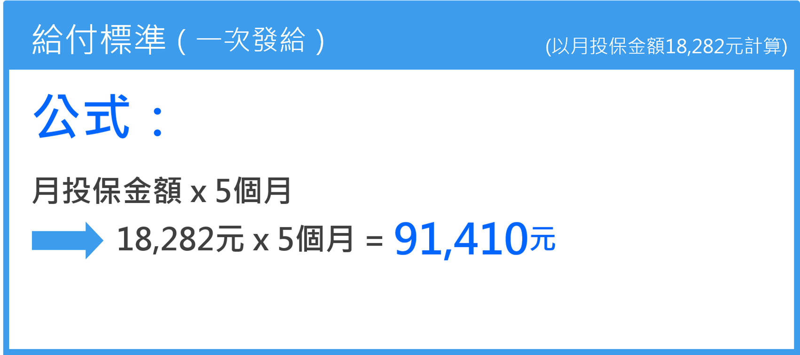

請領資格
- 被保險人於國保加保期間死亡(未滿65歲)。
- 由支出殯葬費用者領取。
- 非家屬也可申請，自得請領之日起，5年請求權時效只要有實際支出殯葬費者即可申請。申請人須檢附家屬出具說明，表達已知悉喪葬給付領取金額。

※喪葬給付係按被保險人死亡當月的月投保金額一次發給5個月。※國民年金保險月投保金額，自104年1月1日起，由17,280元調整為18,282元。
喪葬給付一律發給
5個月月投保金額
- 支出殯葬費用證明文件應為正本，登載金額應為「實際支出殯葬費用之金額」，與喪葬給付金額無關。
- 不論實際支出費用多少，通過審核者一律發給5個月月投保金額的喪葬給付！(104年1月1日起為
91,410元
)。